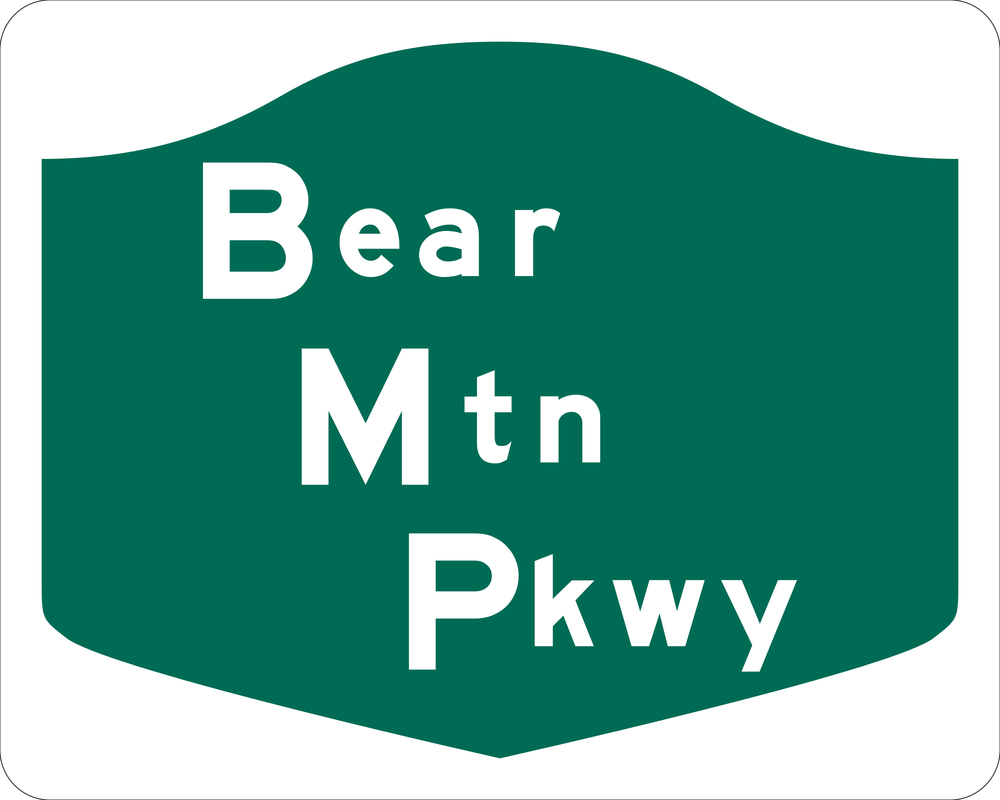

Westchester Parkways
Saw Mill River Parkway
Sprain Brook Parkway
Taconic State Parkway
Westchester Parkways
Cross County Parkway
Bear Mountain Parkway

Westchester and Bronx Parkways
Bronx River Parkway
Hutchinson River Parkway